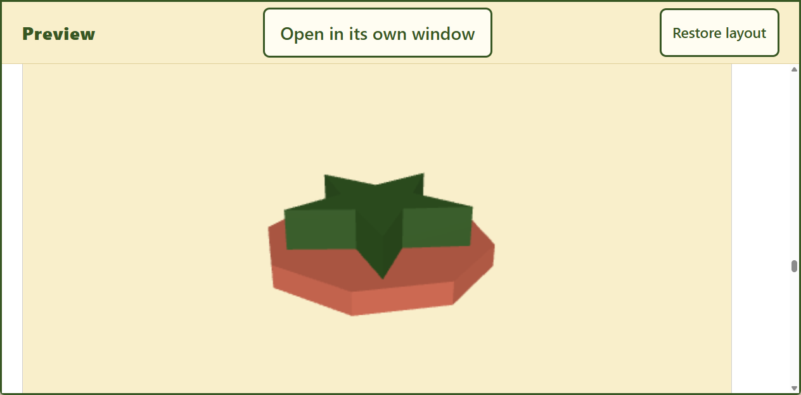
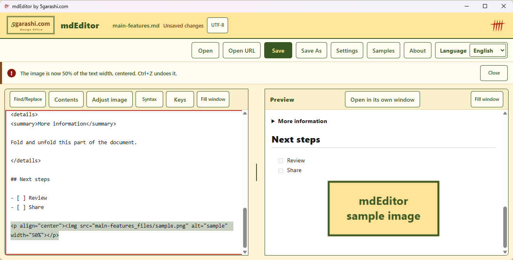

Diagrams, 3D, maps and video
From Mermaid, Graphviz and math to interactive STL, GeoJSON and embedded video.

mdEditor · WINDOWS
Write beside a live preview.
Rotate models, explore maps and share in the format you need.
Free for Windows. Check the Store for the available version and requirements.

Open PDF and Word files as Markdown. AI chat answers open with their formatting quirks fixed. Save a PDF that looks like the preview, in one click.
Write beside a live preview. Mermaid, Graphviz, math, 3D models and maps, offline. Markdown mistakes are underlined, and Ctrl+Shift+W aligns table columns.
Windows only, free. PDF import is best effort: multi-column layouts and scanned PDFs do not come back. AI chat answers are reproduced as closely as possible. Recorded from source build 1.0.20. Developed and produced with AI assistance (Claude, Codex). The music was composed and generated with Codex.
From Mermaid, Graphviz and math to interactive STL, GeoJSON and embedded video.
Synchronized scrolling, a detached preview and a full-window viewer.
Open Word, HTML, email and CSV; save PDF, Word, HTML, PNG and more.
Preserved content depends on the format. Word import does not preserve colors or layout; notebook export omits execution output.
Drop or paste an image, then set it to 50% width and center it (screen from 1.0.15). Share the document and its used assets as a ZIP.

THE REAL APP
A recording of the Windows app, with captions for every step.
The video could not play. Download the MP4 below and open it in a video player.
BGM starts when you play. Light Steps — 5garashi.com Design Office / Codex, CC BY 4.0; excerpt repeated and faded. Big Buck Bunny © 2008 Blender Foundation, CC BY 3.0 · Credits. Map: © OpenStreetMap contributors.
Actual source build 1.0.20. Captions and BGM, no narration. Internet media and maps were allowed during recording.
START WITH ONE
Short samples with no external images. Download and use them on your PC.
Start here. Edit a heading and a diagram label, then export the equation and table too.
Download Markdown — Diagrams and mathKeep a procedure in a flowchart, table and checklist.
Download Markdown — Document reviewA template for key points, sources and next actions.
Download Markdown — Organize an answerThe answer template is for your own notes. mdEditor has no AI generation feature and does not calculate values in equations or tables.
Existing sample with more diagram typesEditing, diagram and equation rendering, and PDF export happen locally. mdEditor itself does not collect or transmit documents or personal information.
Internet images, video and maps load only with permission. Open URL fetches the specified https page. The server receives information such as your IP address. WebView2 updates and diagnostics follow Microsoft settings.
Read the privacy policy5garashi.com DESIGN OFFICE
mdEditor is developed by 5garashi.com Design Office. Visit our website to discuss tools for documents, work procedures and technical systems.